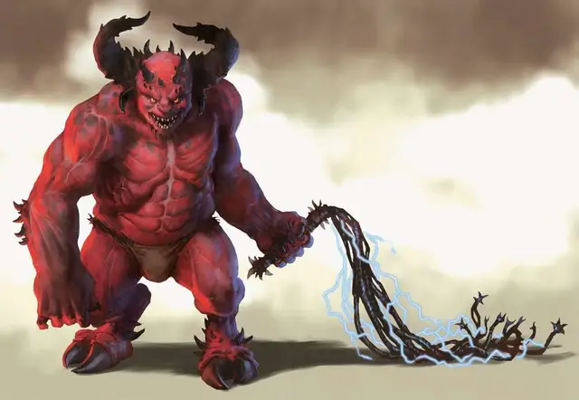

Молох
Moloch
Большое Исчадие (Дьявол), законно-злое

Класс Доспеха 19 (природный доспех)
Хиты 253 (22к10 + 132)
Скорость 30 футов
| мод | спас | ||
|---|---|---|---|
| СИЛ | 26 | +8 | +8 |
| ЛОВ | 19 | +4 | +11 |
| ТЕЛ | 22 | +6 | +13 |
| мод | спас | ||
|---|---|---|---|
| ИНТ | 21 | +5 | +5 |
| МДР | 18 | +4 | +11 |
| ХАР | 23 | +6 | +13 |
Навыки Восприятие +11, Запугивание +13, Обман +13
Сопротивление урону холод; дробящий, колющий, рубящий от немагических атак, кроме нанесённых посеребрённым оружием
Иммунитет к урону огонь, яд
Иммунитет к состояниям отравление, очарование, испуг, истощение
Чувства тёмное зрение 120 футов, пассивное Восприятие 21
Языки Все, Телепатия 120 фт.
Опасность 21 (33000 опыта)
Бонус мастерства +7
Особенности
Врождённое колдовство. Базовой характеристикой Молоха является Харизма (Сл спасброска от заклинания 21). Он может накладывать следующие заклинания, не нуждаясь в материальных компонентах:
• Неограниченно: смена обличья [alter self] (может становиться Среднего размера), восставший труп [animate dead], огненные ладони [burning hands], смятение [confusion], обнаружение магии [detect magic], полёт [fly], обет [geas], образ [major image], зловонное облако [stinking cloud], внушение [suggestion], огненная стена [wall of fire]
• 1/день каждое: небесный огонь [flame strike], знак [symbol] (только эффект «ошеломления»)
Легендарное сопротивление (3/день). Если Молох проваливает спасбросок, он может вместо этого сделать спасбросок успешным.
Сопротивление магии. Молох совершает с преимуществом спасброски от заклинаний и прочих магических эффектов.
Магическое оружие. Атаки оружием Молоха являются магическими.
Регенерация. Молох восстанавливает 20 хитов в начале своего хода. Если он получает урон излучением, эта особенность не работает до начала его следующего хода. Молох умирает только в случае, если начинает ход с 0 хитами и не может регенерировать.
Действия
Мультиатака. Молох совершает три атаки: одну Укусом, одну Когтями и одну своим Хлыстом.
Укус. Рукопашная атака оружием: +15 к атаке, дистанция 5 фт., одна цель. Попадание: 26 (4к8 + 8) колющего урона
Когти. . Рукопашная атака оружием: +15 к атаке, дистанция 10 фт., одна цель. Попадание: 17 (2к8 + 8) рубящего урона.
Многохвостый хлыст. Рукопашная атака оружием: +15 к атаке, дистанция 30 фт., одна цель. Попадание: 13 (2к4 + 8) рубящего урона, плюс 11 (2к10) урона электричеством. Если целью является существо, оно должно преуспеть в Спасброске Силы Сл 24, иначе будет притяну на 30 футов к Молоху.
Дыхание отчаяния (перезарядка 5-6). Молох выдыхает куб с габаритами в 30 футов Каждое существо в этой области должно преуспеть в спасброске Мудрости Сл 21, иначе получит 27 (5к10) урона психической энергией, уронит всё, что держало в руках, а также станет Испуганным на 1 минуту. Испуганное таким образом, существо должно использовать действие Рывок на каждом своём ходу, чтобы двигать от Молоха как можно дальше максимально безопасным путём. Если существу некуда двигаться, оно не использует действие Рывок. Если существо завершает ход в области, откуда не видно Молоха, оно может повторить спасбросок, завершая эффект Испуга в случае успеха.
Телепортация. Молох магически телепортируется в свободное пространство, которое может видеть в пределах 120 футов от себя.
Легендарные действия
Молох может совершить 3 легендарных действия, выбирая из представленных ниже вариантов. За один раз можно использовать только одно легендарное действие, и только в конце хода другого существа. Молох восстанавливает использованные легендарные действия в начале своего хода.
Зловонное облако. Молох творит заклинание Зловонное облако.
Телепортация. Молох использует действие Телепортация.
Хлыст. Молох совершает одну атаку Хлыстом.
Описание
Изгнанный из Девяти Преисподних, Молох, сделает что угодно, чтобы вернуть себе своё место. Давным-давно, Молох заслужил быть среди архидьяволов за счёт своих заслуг по изгнанию демонов из Девяти Преисподних. Асмодей наградил Молоха, повысив того до правителя Малболга.
Веками Молох правил в своих владениях, борясь с другими архидьяволами, стремясь заполучить ещё большую власть. Такая враждебность была на пользу Асмодею, поскольку он знал, что такие козни Молоха помогали ему испытывать прочих архидьяволов.
Такие меры перестали срабатывать, когда Молох взял в своё распоряжение советника, ночную ведьму по имени Малгард. Её слова отравляли, постепенно она убедила Молоха направить все силы, чтобы свергнуть Асмодея. Хоть и заговор почти сработал, он был сорван, а Молоха лишили власти и приговорили к смерти, и только своевременное использование планарного портала позволило ему сбежать.
Молох, не теряя времени, готовился к своему воз- вращению. Он собрал армию дьяволов и чудовищ, и покинул их, чтобы сделать пару последних приготовлений по вторжению в Девять Преисподней. Скитаясь по дальнему Материальному Плану в надежде найти артефакт, способный обеспечить ему успешную победу, Молох оказался там в ловушке, оставив свою армию на милость своих врагов. В скором времени, все они были разбиты и уничтожены.
Теперь Молох стал почти бессильным после своего последнего провала. Он неустанно планирует пути возвращения к своим прежним владениям, но каждый раз, когда он входит в Девять Преисподних, он понижается до уровня импа и не может восстановить свои силы, пока не покинет эти земли. Таким образом, он живёт, строя планы в Малболже или других слоях Преисподней, а иногда и путешествуя по другим планам в поисках магической мощи или секретов, что помогут ему вернуть обратно свой титул.
Ходят слухи, что его можно найти в Сигиле, где он проводит сделки с юголотами, чтобы построить очередную армию, с помощью которой он вторгнется в Малболж и вырвет свой престол из лап Глэсьи. В невыгодном для себя положении, ему мало что есть предложить им, и поэтому он заключает сделки со смертными, чтобы получить их помощь в виде золота, драгоценных камней и прочих богатств взамен на знания о Девяти Преисподних и других планах.
Большинство культистов Молоха сменили верность ему на других архидьяволов, но идолы, построенные почитать его, по-прежнему стоят в глубинах подземелий, а их драгоценные глаза и остаток их силы ведёт чудовищных последователей и глупых искателей приключений в те места, где сохранилось его злобное влияние.